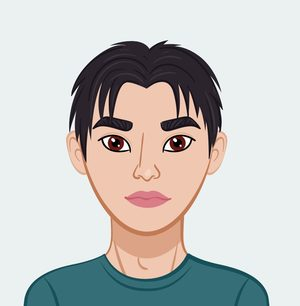

Autori
Web sjedište izradili su učenici 1.c razreda prirodoslovno-matematičke gimnazije u sklopu izborne nastave informatike.
Iva M.
Branko A.
Iva G.
Ante M.
Marija M.

Ivan P.
Brigita P.
Ante V.
Marko L.
Lucia Z.
Ana D.
Bartol J.
Lana L.
Cvijeta G.
Pošalji poruku
Gdje smo
Gimnazija dr. Mate Ujevića, Imotski
Izvori slika
Sve fotografije na ovom web sjedištu preuzete su isključivo u svrhu školskog projekta „Dan sjećanja“ i neće se koristiti u komercijalne svrhe. Autorska prava pripadaju njihovim autorima i izvornim objavljivačima.
Dubrovnik
- Dubrovnik – Ratni prizor (stranica): Peščanik
- Dubrovnik u vrijeme opsade (stranica): Slobodna Dalmacija
- Muzej Domovinskog rata (galerija): Wikimedia Commons
- Stradanje Dubrovnika (galerija): 24sata Express
- Foto Pavo Urban (galerija): Dubrovnik Insider
- Pogled na Dubrovnik (stranica), Ratni prizor 1–5 (galerija): sličice iz Google pretraživanja slika, izvorna stranica nije navedena
Ostali gradovi i teme
Fotografije su prikupili učenici autori pojedinih stranica iz javno dostupnih izvora na internetu.